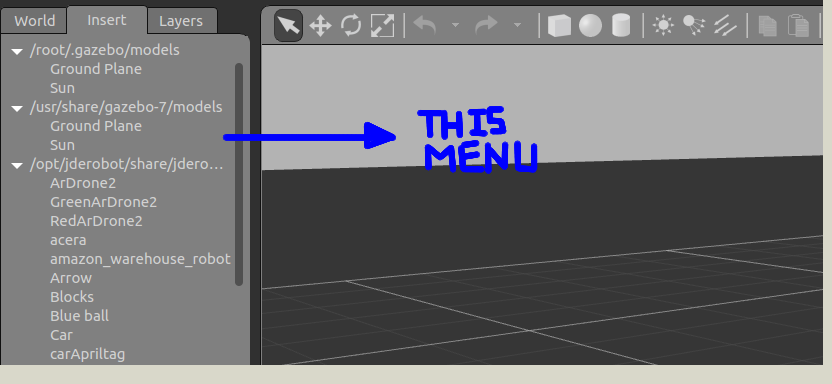
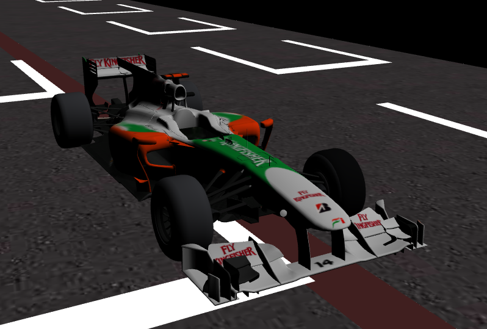

Tweaking the launch files to import the required models and; updating and organizing the follow_line exercise webpage, were the main tasks of this week.
The light part of this week
As discussed with José Sir, I am to update the webpage of the follow_line exercise. The webpage was missing Theory, Hints and Instructions related to the exercise. As I have already written the Theory and Hints for the repository page of follow_line. The main task was only to copy and organize the information.
There may be a slight problem in the webpage. As observed previously, in the follow_line page, the images were loading on the local server, but not on the running server. I resolved that problem by making changes to the path. If such problem arises again, I would make changes to the path again, SIMPLE!
Note: At the time of writing, I have sent a pull request which is yet to be reviewed, so the website may not be updated yet!
Slight Tweeking
I was also informed by José Sir on mail, that the video and gifs I uploaded were a little dark. Now, my job was to lighten them up. Looking at the easiest preceivable solution, I tried applying filters to it. But, as expected it didn’t work out.
Actually, my gazebo simulator was the one rendering dark colored objects. So, the problem was certainly to be solved by making changes to the gazebo simulator. After, some futile efforts I was still not able to brighten the objects.

After some more thinking and observing, I saw that the models which I was importing in gazebo on the run, were quite colorful and bright. One more observation I found, that the Robotics Academy gazebo-models files contain 3 types of tracks. pista, pista_simple and pista_low_detail. The followline exercise was using pista_low_detail.
This led me to change the launch file of the follow_line exercise. I changed the model it was importing to pista, which made the track more vibrant, a complete circuit track along with audience stands. After tweaking this much, and being a patriot I am. I also changed the Formula1 car to Force India.

Then, made some new gifs which were quite better than the previous ones! And added them as well.